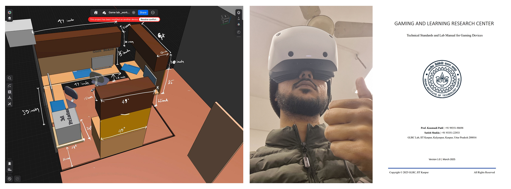

Undergraduate Student, Computer Science & Engineering
Manipal University Jaipur
krishanu.229301409 [at] muj.manipal.edu krishanubujarbaruah
hey player one, i’m on a journey to make technology more playful, intuitive, and maybe a bit unconventional. enjoy your stay! welcome to my corner of the internet. ).
as a design researcher, i have been exploring the human mind and behaviour to build products and experiences that are delightful, simple, and innovative. i’m all about pushing the boundaries of how we interact with technology.
feel free to explore my projects! if you’re a high-schooler or undergrad who’s interested in getting into ai / human-computer interaction / research, i’m always happy to give advice if you feel like i can be of any help.
📣 [10/2025] Currently contributing to the Black Swan Project at MU-VT Interdisciplinary Advanced Centre for Transformative Technologies and working on a personal project exploring and metricizing silence in smart watches.
Campus Adda - designed this all-inclusive gamified mobile application set to make 15K+ lives at Manipal University easy
Arti Buzz - partnered with Antaran to craft a curriculum-driven, scenario-based learning module for artisans
- We integrated structured game mechanics—such as goal setting, immediate feedback, and rewards—withinrealistic simulations to bridge theoretical knowledge heighteneing user engagement and skill retention.
Mosaic Pass - aims to design a cue-based graphical password system for emergent users of Smartphones
- MosaicPass is a cue-based graphical password system improving memorability & login successrate by 30%, integrating adaptive decoy placement & mosaic security translating image-based cues.
 I made a lab      Â
 Â Â Â ÂRainbow Runner - features a unique tabletop controller with a colour-sensing glove, merging physical interaction withdigital gameplay. the game's narrative of a character regaining their colors through crystal collection
Re-designing / www.nic.in - transforming this complex government portal into an intuitive interface that simplifies service discovery
Acharya GPT - iOS chatbot allowing an LLM to deliver accurate and personalized ayurvedic formulations and instructions
Care Voice AI - offers a compelling value proposition by alleviating the workload of doctors, enhancing patient engagement, and overall improving healthcare delivery.
Elective Management System - SLcM - Designed role-based interfaces for Students, Admins, and Department Coordinators to ensure intuitive navigation.Conducted usability testing, implemented iterative feedback cycles, and streamlined decision-making for 10,000+potential users.
NCIIPC (National Technical Research Org), New Delhi Technical Assistant [May 2025 - Aug 2025]
Pluralsight, Bengaluru Product Design Intern [Jan 2025 - May 2025]
Indian Institute of Technology Kanpur, Uttar Pradesh, IN Research Associate - Department of Design [Dec 2024 - Apr 2025]
Indian Institute of Technology Bombay, Maharashtra, IN Research Intern - Industrial Design Centre [Summer 2024]
Indian Institute of Technology Guwahati, Assam, IN Research Intern - Sustainability and Social Innovation Lab [Summer 2024]
Zankla Studios Pvt. Ltd., Baksa, Assam, IN Design & Operations Incharge [Aug 2022 - Dec 2023]
🌻 i treat my work as a journal of exploration. every prototype, sketch, or research note is another entry in my ongoing study of how humans and technology can evolve together. i’m fascinated by the “whys” behind user behaviour—why we click, why we trust, why we feel connected to certain designs. (this curiosity) drives me to conduct deep research. my goal? To create experiences that make people go “wow, i didn’t know computers could do that!”